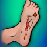

کزاز
Vaccine Td 0.5cc IM Stat >7y
Vaccine DT 0.5 cc IM Stat <7y
Amp TIG (tetabulin 250u/1ml) 3000-6000u IM
نکات:
1- زخم را خوب شستشو دهید .
2- در صورت بروز علایم آنتی بیوتیک (پنی سیلین یا سفتریاکسون ) میتوان داد.
3- به چه کسانی واکسن میزنیم :
سابقه واکسیتاسیون نا مشخص یا کمتر از سه دوز
3دوز را کامل زده اما در زخم تمیز بیشتر از 10 سال و در زخم کثیف بیش از 5 سال از واکسیناسیون گذشته
است.
●Stiff neck
●Opisthotonus
●Risus sardonicus (sardonic smile)
●A board-like rigid abdomen
●Periods of apnea and/or upper airway obstruction due to vise-like contraction of the thoracic muscles and/or glottal or pharyngeal muscle contraction, respectively
●Dysphagia
1️⃣ Drug-induced dystonias :phenothiazines
2️⃣ Trismus due to dental infection,Peritonsillar Abscess
3️⃣ Strychnine poisoning due to ingestion of rat poison
Malignant neuroleptic syndrome 4️⃣
Malignant hyperthermia 5️⃣
Hysteria 6️⃣
Hepatic encephalopathy 7️⃣
Seizure disorder 8️⃣
Meningitis 9️⃣
🔟 Encephalitis
Stroke 1️⃣1️⃣
Tardive Dystonia 1️⃣2️⃣
1️⃣3️⃣ serotonin syndrome
1️⃣4️⃣ Hypocalcemia